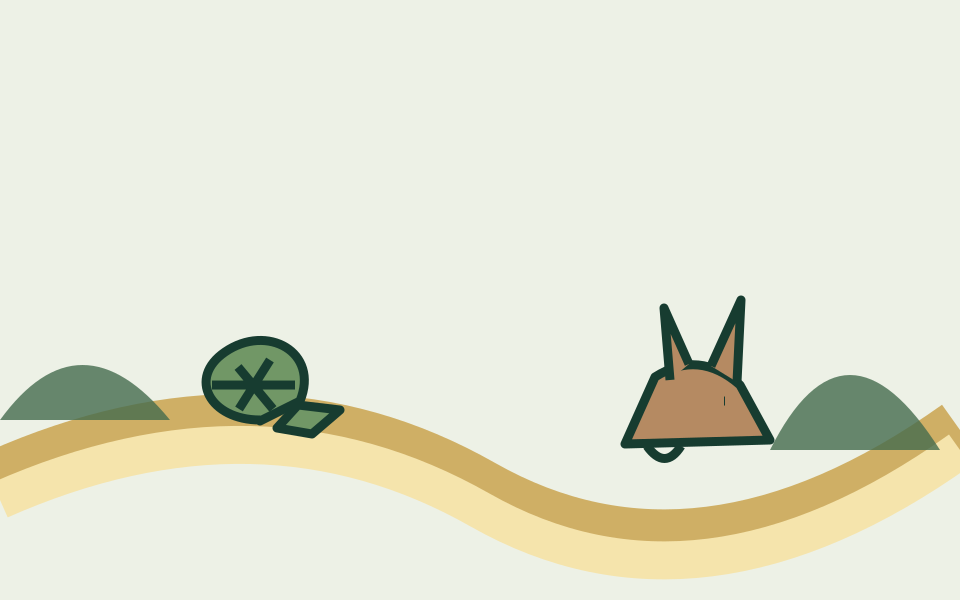

The Tortoise and the Hare

A boastful hare learns that steady effort can overcome speed without discipline.
The story
Moral
Steady and consistent effort can succeed where natural ability becomes careless.
Moral explanation
Reflection questions
Source and copyright note
Traditional fable commonly attributed to Aesop. Retold here in original language.
The traditional story is in the public domain. This website’s retelling, commentary, organization, design, and original illustrations were created for Fable Garden.
Page URL: